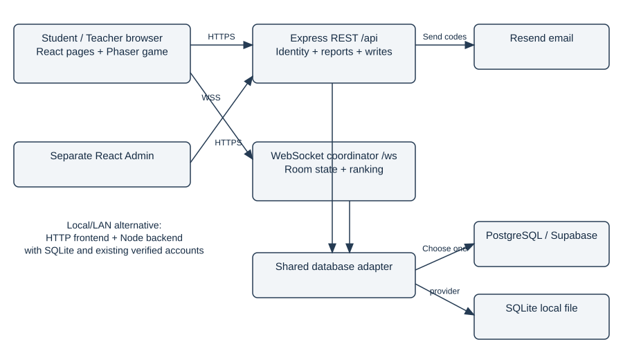
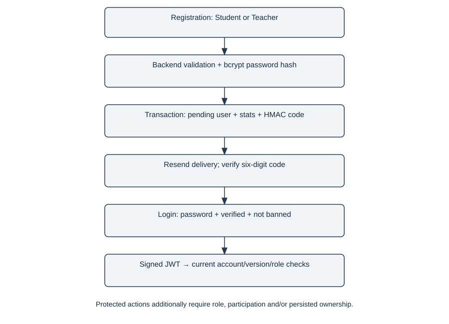
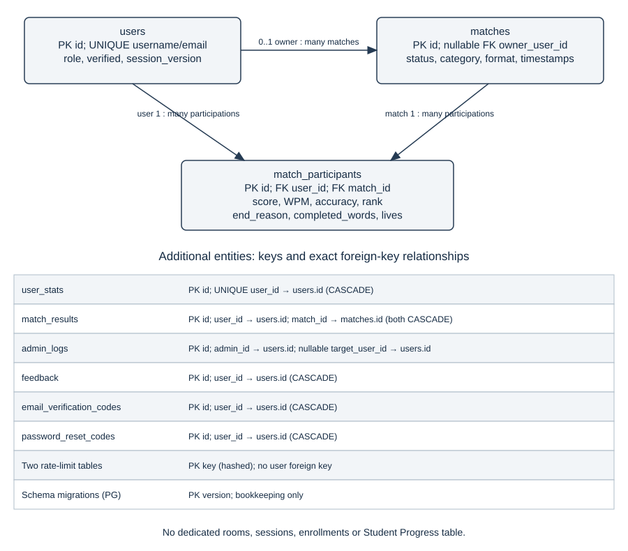
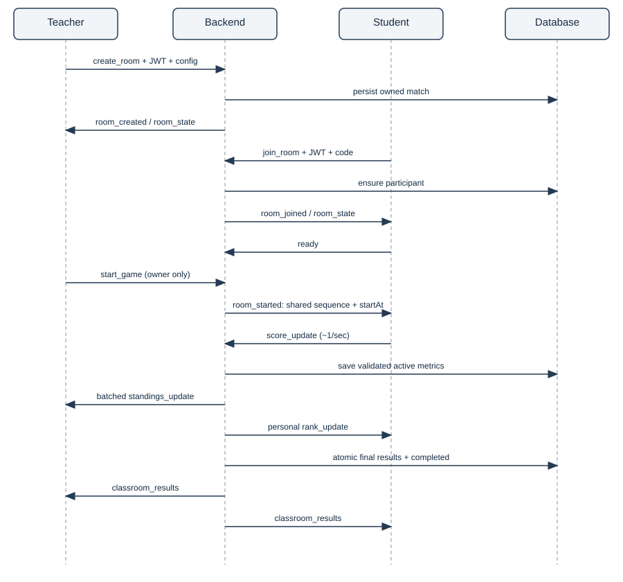

Prepared for: Primary developer, final capstone defense
Audit date: 9 November 2026 — Asia/Manila
Basis: Actual current local repository; read-only application audit.
Evidence labels: CONFIRMED IN CODE = directly observed implementation; PARTIALLY IMPLEMENTED = code exists with an explicit limitation; NOT IMPLEMENTED = absent from the inspected relevant execution path; NEEDS VERIFICATION = requires execution, deployment access or domain approval. “Not implemented” does not mean every conceivable external system was searched.
Scope: Files created only inside defense-review. No secret values, production queries, application edits, migrations, installs, commits, pushes or deployments. Existing local changes are outside this guide's change scope.
CONFIRMED IN CODE. Type Tiles is a React and TypeScript browser application containing a Phaser 3 falling-target typing game. Express exposes JSON REST endpoints and a ws WebSocket server for classrooms. A separate React Admin application manages accounts. A shared database interface selects file-backed SQLite or PostgreSQL; selecting a provider does not synchronize the two databases. See src/components/GameMount.tsx:49, server/src/index.ts:62, and server/src/db.ts:14.
The complete academic project title is Type Tiles: A Gamified Standalone Typing Application Using Falling Tile Mechanics for Skill Development. The word “Standalone” in the title is not proof of a packaged desktop binary. No Electron/Tauri dependency, desktop entry point, or service-worker installation flow was identified in the inspected application entry points and package manifests. NOT IMPLEMENTED in the inspected architecture: a downloadable native desktop wrapper and automatic online/offline database synchronization.
| Technology | Actual responsibility | Primary evidence |
|---|---|---|
| React 18 + React Router 6 | Pages, authentication context, route guards, classroom and progress UI | src/main.tsx; src/App.tsx |
| TypeScript + Vite 7 | Static checking, development server, frontend module/asset bundling | package.json; vite.config.ts |
| Phaser 3.90 | Canvas/WebGL rendering, frame update, keyboard events, target layout and effects | GameMount.tsx; GameScene.ts |
| Express + Node.js | HTTP JSON routes, middleware and lifecycle | server/src/index.ts |
| ws | Persistent classroom connections and event messages | server/src/lan.ts |
| SQLite / sqlite3 | Local file-backed relational persistence, WAL and foreign keys | server/src/db.ts |
| pg / PostgreSQL | Pooled remote relational queries with verified TLS | server/src/postgresDatabase.ts |
| bcryptjs / jsonwebtoken / crypto | Password hashing, signed JWTs, random/HMAC-protected email codes | server/src/auth.ts; emailVerification.ts |
| Resend | Backend delivery of verification and recovery email | server/src/email.ts |
| Tailwind CSS + lucide-react | Page styling and interface icons | tailwind.config.ts; components/AppShell.tsx |
| Axios in Admin; fetch in main client | REST transport with bearer authentication | admin/src/api.ts; src/lib/playerApi.ts |

flowchart TB
Player[Student / Teacher browser: React + Phaser] -->|HTTPS REST /api| API[Express backend]
Player <-->|WSS /ws classroom events| WS[ws room coordinator]
Admin[Separate React Admin] -->|HTTPS bearer requests| API
API --> DB[Shared database adapter]
WS --> DB
DB -->|selected provider| PG[PostgreSQL / Supabase]
DB -->|alternative local provider| SQ[SQLite file]
API --> MAIL[Resend email service]The browser runs rendering and typing calculations. The server decides who may join or host, controls configuration and ranking, and saves accepted results. The database preserves records, not live WebSocket objects. The email provider delivers codes but does not authenticate Type Tiles sessions.
PARTIALLY IMPLEMENTED hybrid operation. Online use needs access to the deployed frontend and backend; online registration/recovery needs Resend delivery. Local/LAN use can serve the frontend and backend locally and select SQLite. Existing verified local accounts can authenticate against that local database without using Supabase. First-time verification still depends on an email delivery path. A public HTTPS frontend cannot freely switch to an insecure LAN ws:// endpoint: the resolver rejects that combination. Local service availability is required; this is not a cached offline PWA.
Students practice and join classrooms. Teachers use the same login application, host their own classrooms, and review owned sessions and student progress. Admin uses a separate application with backend Admin middleware. A verified Teacher is self-selected at public signup; this verifies email control, not school employment. References: src/App.tsx:57, server/src/emailVerification.ts:26, server/src/lan.ts:445.
“Type Tiles separates page navigation, real-time gameplay, and persistent data. React manages the screens, Phaser updates the falling targets, and our Express server validates access and coordinates classroom events. SQLite supports a local server setup, while PostgreSQL supports the hosted backend. These are alternative storage providers, not an automatic sync system.”
type-tiles1/
index.html Browser entry and favicon
package.json Main frontend scripts/dependencies
vite.config.ts React Vite plugin
wrangler.jsonc Cloudflare Worker static assets and SPA fallback
public/ Static public files, including favicon.svg
src/
main.tsx, App.tsx, words.ts
components/ Auth, shell, game mount, classroom UI
pages/ Home, Lobby, Game, Results, StudentProgress, etc.
lib/ API, auth context, endpoints and shared UI types
scenes/ GameScene, game rendering/effects/pause helpers
data/ Gregg master records and development crop mappings
assets/ Images, Gregg PNGs, avatars, logos and backgrounds
server/
package.json
src/ Express entry, auth, database, email, classroom logic
routes/ auth, verification, recovery, matches, admin, feedback, leaderboard
tests/ Node/tsx tests, shared security and persistence checks
scripts/ DB check, local test helpers, email test, reset utility
admin/
package.json, vite.config.ts
src/ Separate Admin application, API and pages
supabase/migrations/ Initial PostgreSQL schema + classroom ownership
tests/ Frontend email verification harness
docs/ Earlier implementation notes and ERD artifacts
capsdoc/ Existing capstone document PDF
defense-review/ This audit, diagrams and generated study guideThere is no active src/game/ directory in this repository map: gameplay lives in src/scenes/ and src/scenes/game/. Generated dist folders and installed dependencies are not source architecture. Do not open environment files during a defense demonstration.
| File | Functions/classes | Purpose / callers / timing / importance |
|---|---|---|
| src/main.tsx | ReactDOM.createRoot | Bootstraps Router and auth provider. Called by index.html loads it; runs Browser startup. Places shared identity above every page. |
| src/App.tsx | ProtectedApp; GameRoute | Defines public/protected/teacher-only routes. Called by main.tsx; runs Navigation. Separates UI access and game state. |
| src/components/AppShell.tsx | AppShell | Shared navigation and Outlet. Called by ProtectedApp; runs Authenticated pages. Shows teacher-only Progress link. |
| src/components/PlayerAuth.tsx | PlayerAuth | Shared login and Student/Teacher signup form. Called by App routes; AuthContext; runs Login/register visits. Collects validated account input. |
| src/lib/PlayerAuthContext.tsx | PlayerAuthProvider | Restores /me; login/register/logout state. Called by main.tsx; pages; runs Mount and auth actions. Centralizes browser session state. |
| src/lib/playerApi.ts | request; createPlayerMatch | Typed REST requests and response types. Called by AuthContext; Results; Progress; runs API actions. One main-client transport surface. |
| src/lib/endpoints.ts | resolveBackendEndpoints | Validates REST/WS origins and protocols. Called by playerApi; Lobby; Game; runs Before network operations. Prevents mixed-content/backend mismatch. |
| src/pages/Index.tsx | Dashboard | Current home and game options. Called by App DashboardRoute; runs /app. Used by both roles; legacy TeacherDashboard is not routed. |
| src/pages/PreMatch.tsx | PreMatch | Creates Solo match then countdown. Called by Home/Play navigation; runs Before Solo game. Obtains persisted match ID. |
| src/components/GameMount.tsx | GameMount | Creates/destroys Phaser instance. Called by pages/Game.tsx; runs Game mount/unmount. Bridges React and Phaser lifecycle. |
| src/scenes/GameScene.ts | init; update; handleTyping; endMatch | Core target selection, typing and metrics. Called by GameMount via match_hud re-export; runs Each round and frame. Actual gameplay authority in client. |
| src/scenes/game/WordTarget.ts | setWord; setSentence; setSoloGreggCrop | Text/image target rendering and source frames. Called by GameScene; runs Spawn/typing/resize. Keeps gameplay answers distinct from hidden captions. |
| src/scenes/game/PauseMenu.ts | open; close; toggle | Pause overlay and tween control. Called by GameScene; runs Pause and Escape. Freezes local update through isPaused. |
| src/scenes/game/WaterEffects.ts | shoot; playSplash; ensureAnimations | Typing shots and completion feedback. Called by GameScene; runs Typing/completion. Visual feedback without scoring ownership. |
| src/scenes/game/lanes.ts | getLaneX; pickLaneNotSame | Target lane positions. Called by GameScene; runs Spawn/resize. Keeps lateral placement reusable. |
| src/pages/Lobby.tsx | Lobby; socket handlers | Teacher configuration, ready/start, monitoring. Called by App route; endpoints; runs Classroom lobby. Teacher stays here during match. |
| src/pages/Game.tsx | handlePerformance; handleGameOver | WS student metrics; Solo REST submission. Called by GameRoute; GameMount; runs Active match. Separates Solo from classroom finalization. |
| src/pages/Results.tsx | Results; openTeacherSession | Personal results and teacher session reports. Called by playerApi; App; runs Results navigation. Session-first historical view. |
| src/pages/StudentProgress.tsx | StudentProgress; metric | Teacher directory and per-student history. Called by App teacher route; playerApi; runs Progress navigation. Student-first aggregation of owned sessions. |
| src/data/stenoExercises.ts | STENO_EXERCISES | Five master PNGs and sentence answers. Called by greggPrompts; Word Bank; pilot; runs Module loading. Single source for full-sentence Gregg. |
| src/data/dev/greggPilotMappings.ts | PENDING_GREGG_PILOT_MAPPINGS | Pixel crops and pending answers. Called by GameScene DEV branch; runs Local crop preview. Not an instructor-approved production bank. |
| server/src/index.ts | start; shutdown | Express/WS boot, CORS, DB and signals. Called by npm start/dev; runs Backend lifecycle. Initializes before listening. |
| server/src/db.ts | initializeDatabase; databaseTransaction | Provider selection and SQLite schema. Called by Every route/service; runs Startup and DB operations. Shared contract, dedicated transactions. |
| server/src/postgresDatabase.ts | postgresQuery; postgresTransaction | Bind conversion, TLS, pooled client. Called by db.ts; runs PostgreSQL queries. Preserves common SQL API. |
| server/src/auth.ts; middleware.ts | generateToken; authMiddleware | Passwords/JWT and current-account checks. Called by REST routes; lan authenticates separately; runs Authenticated operations. Server-side trust boundary. |
| server/src/emailVerification.ts | register; issue; verify; resend | Pending accounts and protected OTP lifecycle. Called by routes/auth.ts; runs Registration and verification. No session until later login. |
| server/src/passwordReset.ts | PasswordResetService.reset | Code validation, password change, version increment. Called by routes/passwordReset.ts; runs Recovery. Invalidates old sessions. |
| server/src/lan.ts | attachLanServer; finalizeRoom | Room state, capacity, ownership and rankings. Called by index.ts; classroomPersistence; runs WS events/timers. Classroom coordinator. |
| server/src/classroomPersistence.ts | completeClassroomMatch; cancelClassroomMatch | Transactional terminal status and participant writes. Called by lan.ts; runs Finalization/cancellation. Prevents terminal overwrite/retry mutation. |
| server/src/routes/matches.ts | TEACHER_PROGRESS; route handlers | Solo submission and scoped classroom reports. Called by index.ts; runs REST requests. Persisted ownership and type checks. |
| server/src/routes/admin.ts | DELETE /users/:userId handler | Administrative mutations and audit records. Called by index.ts; Admin UI; runs Admin actions. Deletion/role changes under authorization. |
| server/src/classroomConfig.ts | validateClassroomConfig; createClassroomSequence | Allowed settings and shared sequence. Called by lan.ts; runs Create/configure/start. Rejects unsupported Gregg format. |
| server/src/wordBank.ts; sentenceBank.ts | getWordsForDifficulty; getCategorySentences | Shared category content. Called by src/words.ts; GameScene; classroomConfig; runs Content selection. Avoids duplicate frontend/server banks. |
| admin/src/App.tsx; api.ts | App; APIClient | Separate Admin routes and Axios client. Called by admin/src/main.tsx; runs Admin startup/actions. Separate bundle, same backend identity. |
| supabase/migrations/*.sql | Versioned SQL transactions | PostgreSQL schema and ownership addition. Called by Manual migration workflow; startup validation; runs Explicit deployment preparation. Never infer ownership of legacy matches. |
CONFIRMED IN CODE: src/scenes/match_hud.ts and src/scenes/match_hud/index.ts re-export GameScene; they are not separate scoring engines. src/pages/TeacherDashboard.tsx exists but src/App.tsx imports the Index dashboard instead. Friends.tsx has a static list; Achievements.tsx displays fixed badge examples and fixed progress width. Do not describe those screens as a completed social graph or earned-badge engine. mockData.ts contains display fixtures and shared types/default configuration; the file name alone does not prove every dependent screen is mocked.
npm run dev executes Vite from the root package manifest. Vite applies the React plugin in vite.config.ts and serves source modules.index.html supplies the #app mount element, metadata, title and favicon, then imports /src/main.tsx.src/main.tsx mounts React StrictMode, BrowserRouter, PlayerAuthProvider and App.PlayerAuthProvider checks localStorage for the stored player token and requests GET /api/auth/me. Until restoration finishes, protected pages show their loading surface.App declares public authentication/recovery routes and the protected /app/* branch. ProtectedApp redirects unauthenticated visitors to /login and otherwise renders AppShell with an Outlet.pages/Index.tsx. Both teacher and student use this active route; role-sensitive controls/navigation decide visible options. TeacherStudentProgressRoute restricts /app/student-progress to current frontend Teacher state; StudentWordBankRoute restricts Word Bank to Students.Evidence: src/main.tsx:8; src/App.tsx:26; src/App.tsx:57; src/pages/PreMatch.tsx:23.
Unknown top-level routes use <Navigate to="/" replace />. Nested authenticated paths are child routes under /app/*; do not promise a dedicated custom 404 page for every unknown child. BrowserRouter uses real URL paths, so the hosting layer must return the app entry for a refresh of /app/game. wrangler.jsonc sets assets.not_found_handling to single-page-application. This is a static frontend fallback, not an Express API rewrite.
playerApi.request resolves the API endpoint and attaches a Bearer token for protected calls. resolveBackendEndpoints derives /api and /ws from the same origin. An HTTPS page requires an HTTPS API; WSS is derived automatically. HTTP local defaults use the page hostname and backend port 3001. A saved classroom connection contains both room code and backend identity. The resolver rejects embedded credentials, query strings, fragments, invalid paths and a host override that differs from the login backend.
Reference: src/lib/playerApi.ts:165; src/lib/endpoints.ts:32. This is why changing a database provider does not choose which server the browser contacts: frontend API configuration and backend storage configuration are different layers.
Explain the difference between a route, component, API endpoint and WebSocket event. A route chooses a page; a component renders it; an API endpoint processes a request; a WS event updates the ongoing classroom. The frontend redirect is a convenience guard. Backend authorization is still mandatory because callers can bypass the browser.

flowchart TD
Form[Student / Teacher registration] --> Validate[Backend validates input and allowed role]
Validate --> Pending[Transaction: users unverified + stats + hashed OTP]
Pending --> Email[Resend sends six-digit code]
Email --> Verify[Verify latest unexpired unused code]
Verify --> Verified[Set email_verified; consume outstanding codes]
Verified --> Login[Login: password, ban and verified checks]
Login --> JWT[Signed JWT stored by browser]
JWT --> Middleware[Verify signature; reload current account and session version]
Middleware --> Role[Role + persisted ownership checks]
Role --> Protected[Authorized REST / classroom action]PlayerAuth shows Student/Teacher registration choices; Student is the default. validateRegistration accepts only literal student or teacher if submitted. An omitted role defaults to Student for older clients. Explicit Admin, legacy player, null, array, object or unknown values are rejected. A duplicate username or normalized email returns 409 instead of changing an existing account. The normalizer used for reading legacy roles is deliberately not used to excuse invalid registration values.
EmailVerificationService.register hashes the password, transactionally creates users with email_verified=0, creates user_stats and stores a protected code, then attempts delivery after commit. Delivery failure leaves a pending account; it does not falsely mark it verified. Verify/resend calls use server-side persistence and rate limits. Registration returns verificationRequired: true, never a login token. Verification updates email flags and consumes codes without changing the selected role or generating a session.
Evidence: server/src/emailVerification.ts:26; server/src/emailVerification.ts:96; server/src/routes/auth.ts:38.
Passwords are stored as bcrypt hashes with cost 10, through hashPassword and verifyPassword. The accepted password range is at least six JavaScript characters and at most 72 UTF-8 bytes; the upper bound prevents bcrypt truncation. Login queries the stored user, checks ban status, compares the hash and requires verified status. Wrong username/password returns 401; banned or unverified account returns 403.
generateToken signs an HS256 JWT with userId, username, role and sessionVersion; expiry is seven days. verifyToken pins HS256 and checks identity/version shape. authMiddleware does not authorize from the token role alone: it reloads the user and rejects missing, banned, unverified or version-mismatched accounts, then installs the current normalized database role in req.user. roleMiddleware and adminMiddleware enforce privileges after authentication.
// server/src/middleware.ts — abbreviated from current implementation
const user = await getDatabase().get(
"SELECT id, username, role, is_banned, session_version, email_verified FROM users WHERE id = ?",
[payload.userId],
);
if (!user || user.is_banned || user.email_verified !== 1 ||
(payload.sessionVersion ?? 0) !== user.session_version) {
return res.status(401).json({ error: "Invalid or inactive account" });
}References: server/src/auth.ts:30; server/src/auth.ts:39; server/src/middleware.ts:13.
The main client stores its token in localStorage using PLAYER_TOKEN_KEY and restores identity with /auth/me. Logout removes the local token and clears React state; it is not a server-side JWT revocation endpoint. A copied unexpired token is not invalidated merely by browser logout. Resetting a password increments session_version in a transaction and emits an invalidation event; old tokens then fail REST and WS checks. Recovery codes expire after ten minutes with five failed attempts allowed; resetting does not implicitly verify an unverified email.
PARTIALLY IMPLEMENTED session model: there is no sessions/refresh-token table. JWT authentication combines a signed token with current account/version lookups, not a traditional server session cookie. LocalStorage also means XSS could expose a token; frontend guard logic is not a substitute for XSS prevention. Reference: src/lib/PlayerAuthContext.tsx:33; server/src/passwordReset.ts:120.
Admin App has its own admin_token and checks /auth/me for role=admin. It shares the same login endpoint; public registration has no Admin option. Every /api/admin router action is protected by authMiddleware plus adminMiddleware. Existing Admin accounts cannot be deleted or changed by the Student/Teacher role endpoint. Admin provisioning is not a public signup feature.
Deletion is permanent and transactional. The handler nulls owned match references and prior audit target references, rejects accounts that authored Admin audit records, deletes the user and writes a delete audit event. Foreign-key cascades remove that user's participants, stats, codes, feedback and match_results rows. Shared matches remain, but their deleted teacher's owner becomes NULL. Historical participant data for the deleted user is not retained as an anonymized record. REST fails for the deleted account on its next request. Same-process WS cleanup closes affected connections/owned rooms; a five-second account sweep and per-message checks detect invalid accounts elsewhere. Event propagation across server processes is not a distributed event bus.
Explain that email verification proves control of an inbox, not Teacher credentials. New Teachers are intentionally not subject to Admin approval. Explain current-role lookup, version revocation and ownership separately. Do not call the system “OAuth”, “Supabase Auth”, “cookie sessions”, or “fully anti-cheat”: those are not the inspected implementation.
ApplicationDatabase exposes get/all/run/exec/close. SQLite startup uses createTables with additive column checks, foreign_keys=ON, busy_timeout=5000 and WAL. PostgreSQL startup connects, then requires the initial and classroom-ownership migration markers; it does not automatically apply production migrations. SQL scripts are the PostgreSQL schema authority, and SQLite createTables is the local schema authority. server/src/db.ts:61; server/src/postgresDatabase.ts:54.
The PostgreSQL adapter rewrites unquoted ? bind markers to $1, $2, etc., while preserving quoted literals/comments. Known identity-table INSERTs receive RETURNING id so common callers get lastID. Text-key rate-limit tables are excluded. Remote connections verify TLS certificates; local database connections can omit TLS. Default pool size is five and accepted configured range is 1–20. Pool size is not a user-capacity limit.
| Table / primary key | Important columns and purpose | Foreign keys / behavior |
|---|---|---|
| users / id | Unique username/email, password_hash, display_name, role, tier, is_banned, avatar/background, session_version, email_verified, email_verified_at | Referenced by all identity-related data; role is TEXT, not a DB enum |
| user_stats / id | Unique user_id; games_played, wins, losses, total_score, best_wpm, avg_accuracy, top_combo | user_id → users.id, ON DELETE CASCADE; one stats row per user |
| matches / id | mode, difficulty, round_time, word_set, practice_format, background, status, created_at, ended_at, owner_user_id | owner_user_id → users.id, nullable; deletion handler explicitly nulls owner |
| match_participants / id | match_id, user_id, score, wpm, accuracy, position, completed_words, error_rate, end_reason, remaining_lives, created_at | match_id → matches.id and user_id → users.id; both CASCADE |
| match_results / id | match_id, user_id, result, rank_change, created_at | Both parent references CASCADE; schema exists, but active gameplay persistence uses match_participants |
| admin_logs / id | admin_id, action, target_user_id nullable, details, created_at | Both identity FKs have no cascade; audit authors protected; targets detached before deletion |
| feedback / id | user_id, message, created_at | user_id → users.id CASCADE |
| email_verification_codes / id | user_id, code_hash, expires_at, attempts, consumed_at, created_at, updated_at | user_id → users.id CASCADE; indexed by user_id, created_at |
| password_reset_codes / id | Same lifecycle columns, separate recovery secret/domain | user_id → users.id CASCADE; separate index and code namespace |
| email_verification_rate_limits / key | Hashed key, window_start, count, last_request | No user_id FK; keyed email/IP quotas |
| password_reset_rate_limits / key | Hashed key and quota timestamps/count | No user_id FK; survives account deletion until cleanup |
| typetiles_schema_migrations / version | Version and migration metadata | PostgreSQL-only bookkeeping, not a gameplay entity |
SQLite identity keys are INTEGER PRIMARY KEY AUTOINCREMENT. PostgreSQL uses INTEGER GENERATED BY DEFAULT AS IDENTITY. PostgreSQL uses BIGINT for epoch milliseconds, TIMESTAMPTZ for ordinary timestamps, and DOUBLE PRECISION for fractional WPM/accuracy. SQLite's dynamic typing permits fractional metrics despite original INTEGER declarations. Normal schema defaults retain legacy role='player'; current auth normalizes it to Student, and registration writes an explicitly validated role.

erDiagram
users ||--o| user_stats : has
users o|--o{ matches : owns
users ||--o{ match_participants : participates
matches ||--o{ match_participants : contains
users ||--o{ match_results : legacy_results
matches ||--o{ match_results : legacy_results
users ||--o{ email_verification_codes : verifies
users ||--o{ password_reset_codes : recovers
users ||--o{ feedback : submits
users ||--o{ admin_logs : authors
users o|--o{ admin_logs : optional_targetRate-limit tables and migration bookkeeping have no user foreign key and are intentionally not connected in the ERD. A classroom is represented by a match and its owner/participants; there is no separate persistent rooms, enrollments, progress or sessions table. Student Progress is a query/view of existing records, not an additional table. Mermaid cardinalities describe allowed FK relationships, not a requirement that every account already has stats.
Registration transaction inserts users + stats + code. Classroom creation stores owner_user_id derived from authenticated identity, not participation. Teacher report queries always bind owner_user_id to req.user.userId. Progress uses a CTE and ROW_NUMBER to select the latest participant row per match/account. There is no composite UNIQUE(match_id,user_id) in either inspected schema: application-level ensureParticipant deduplicates current WS admissions, and progress defensively handles legacy duplicates.
Foreign keys prevent orphan references. NOT NULL and unique username/email constraints protect required identity fields, but many metric/role/status checks are implemented in application code rather than DB CHECK constraints. SQLite enables foreign keys explicitly. PostgreSQL migration enables RLS and revokes public/anon/authenticated table access, while this backend uses a direct privileged database connection; RLS is not a replacement for owner filters in Express. Do not claim browser queries use Supabase client access policies.
Completed/cancelled matches and participant metrics survive application restart if the selected storage persists. Live rooms, ready flags, socket identity and shared room codes are memory-only. Changing DATABASE_PROVIDER does not migrate existing SQLite accounts to PostgreSQL. Deleting a student removes their academic participation rows through CASCADE; deleting a teacher nulls match ownership and protects the remaining shared rows from accidental reassignment. Historical NULL-owner rows are not assigned to a teacher just because that teacher participated.
NEEDS VERIFICATION: actual deployed schema version, backups, retention rules, database volume persistence, connection availability and production data quality were not queried in this audit.
GameMount creates Phaser.Game with Phaser.AUTO, transparent rendering, an empty initial scene list and RESIZE scaling. It then adds/starts the re-exported GameScene with configuration, sequence and callback wrappers. Refs hold current callbacks so UI updates do not unnecessarily recreate the engine. Cleanup removes the resize listener and calls game.destroy(true). match_hud is a compatibility re-export, not a second gameplay engine. Evidence: src/components/GameMount.tsx:20.
GameScene lifecycle: init chooses mode/content and resets configuration; preload loads water sprites and Gregg master textures; create builds HUD, target and pause helpers, checks required assets, spawns the first target, and registers keyboard/resize handlers; update moves the active target every frame. Shutdown removes scene listeners. One active target is managed at a time, even though the overall metaphor is falling tiles.
Ordinary Solo words use the shared bank, preferred difficulty lengths, deduplication and a shuffled deck. Once preferred words are exhausted, remaining category words follow; difficulty is a preference and speed setting, not a permanent exclusion of all other lengths. Easy/Normal/Hard base speeds are 55/75/105 pixels per second. Full sentences and full-sentence Gregg use half speed. Difficulty mapping also maps Extreme to Hard in helper logic.
Classroom ordinary words use the server-supplied common sequence; full sentences use the existing shared sentence bank, and Gregg uses exercise IDs 6–10. spawnWord sets the answer and rendered target, clears current input and selects a lane (or centered full-sentence image). update converts delta milliseconds into seconds, updates elapsed/remaining time and advances wordY by fallSpeed × deltaSeconds. At the bottom boundary onMissBottom deducts a life and points, then spawns another target unless lives are exhausted.
// GameScene.update — central timing/movement pattern
if (this.pauseMenu.isPaused || this.gameOver) return;
const dt = delta / 1000;
this.elapsedSeconds = Math.min(this.matchDurationSeconds, this.elapsedSeconds + dt);
this.remainingSeconds = Math.max(0, this.matchDurationSeconds - this.elapsedSeconds);
// Target layout chooses its bottomLimit; movement uses fallSpeedPxPerSec * dt.References: src/scenes/GameScene.ts:123; src/scenes/GameScene.ts:320; src/scenes/GameScene.ts:347.
Keyboard keydown events reach handleTyping. Modifier/navigation keys are ignored; printable single characters are accepted. Backspace removes the last typed character but does not decrement accumulated keystroke counters. Input is compared case-insensitively using startsWith against the entire current prefix. Exact completion adds ten points, increments completedWords and adds answer.length to completedCharacters before spawning again. Spaces and punctuation are characters in full-sentence answers; uppercase letters are not mandatory because comparison lowercases both sides.
A wrong key increments incorrectKeystrokes and subtracts two points. In sentence/Gregg modes it removes only the newly appended wrong character, preserving the correct prefix; ordinary word mode resets typedText to empty and restores the full word. Correct prefix characters typed again after a reset/backspace can be counted again. Accuracy therefore describes accepted keystroke attempts, not unique final characters. WordTarget handles visual typed/remaining text, while Gregg answer captions stay hidden.
Each round starts with three lives. A target reaching the bottom costs one life and five points; score may become negative. Zero lives sets endReason='health'; timer expiration uses 'time'. Mistyped characters alone do not subtract lives. PauseMenu.open sets paused and pauses tweens; GameScene.update/handleTyping stop while paused. Solo offers Resume/Restart/Exit; multiplayer's overlay offers Resume. The code also freezes the local multiplayer clock on pause, while the server deadline continues. PARTIALLY IMPLEMENTED competitive timing: client pause does not pause everyone or the server.
endMatch marks local gameOver, forces a final performance report and invokes onGameOver with score/WPM/accuracy/errorRate/completedWords/lives/configuration. In Solo, Game.handleGameOver submits to REST once per mounted component and navigates to Results with saved/error status. In multiplayer, local completion displays a waiting state; authoritative classroom_results later replaces Phaser with one results table. The shared class counts a completed sentence or shorthand phrase as one completed target even when the UI field is named completedWords.
WordTarget.setSentence wraps long text; Gregg uses source image dimensions, fitted scale, reserved input height and explicit minimum area checks. Full-sentence Gregg is currently capped to a 350-pixel target width in layoutGreggTarget, so readability should be verified on the actual display. A frame drop is reflected through delta time, not a fixed per-frame distance.
No current streak multiplier or combo-growth algorithm was identified in GameScene. Fields named top_combo and sample badge labels do not establish an implemented combo mechanic. No independent CPM display is implemented in the active HUD. A server-generated startAt timestamp is used by Lobby countdown/navigation, but GameScene.init does not consume it to restore elapsed time. Socket reconnection is not exact Phaser-state recovery after refresh.
| Metric | Formula and implementation | Example / edge cases |
|---|---|---|
| Score | S = 10C − 2E − 5M; handleTyping, onWrongKey, onMissBottom | 12 completed targets, 3 wrong keys, 1 missed target: 120−6−5 = 109. Negative scores are possible. |
| WPM | completedCharacters / 5 / (elapsedSeconds / 60) | 250 characters in 120 seconds gives 25 WPM. Only completed target lengths enter the numerator. If elapsed time is zero, WPM=0. |
| Accuracy | 100 × correctKeystrokes / (correctKeystrokes + incorrectKeystrokes) | 90 accepted prefix keystrokes and 10 wrong attempts gives 90%. No attempts gives 0%, not 100%. |
| Error rate | 100 × incorrectKeystrokes / totalKeystrokes | With 90 correct and 10 wrong, 10%. No attempts gives 0%. |
| Lives | max(0, currentLives − 1) on bottom miss | Starts at 3; three misses end on health. A wrong key does not cost a life. |
| Classroom rank | Score descending, WPM descending, accuracy descending, stable join order | Equal score 100: WPM 45 beats 40; equal WPM: 98% beats 95%; all equal: earlier join wins. |
| Global leaderboard rank | SQL RANK over total_score descending | Equal totals share rank; next rank may have a gap. Not identical to sequential classroom tie-breaking. |
| Teacher average WPM | SQL AVG(valid persisted WPM) for qualifying owned completed attempts | 30, 50, NULL → 40. Zero is valid and counts. |
| Teacher average accuracy | SQL AVG(accuracy BETWEEN 0 AND 100) | 80, 100, NULL → 90%; no valid measurements yields NULL. |
| Personal running avg_accuracy | (oldAvg × oldGames + submittedAccuracy) / (oldGames + 1) | Old 90% across 2 submissions plus 96% gives 92%; repeated REST submissions count again. |
C is number of completed targets, E is incorrect printable-key attempts, M is bottom misses. completedCharacters accumulates the length of each fully completed answer, including internal spaces/punctuation in sentences. Typed but unfinished target characters do not increase WPM, although successful prefix keystrokes increase accuracy's correct counter. This is why WPM and accuracy must not be described as using the same numerator.
Evidence: src/scenes/GameScene.ts:560, src/scenes/GameScene.ts:656, src/scenes/GameScene.ts:716, server/src/lan.ts:143, server/src/routes/matches.ts:10.
// GameScene.updateHud; the same metric pattern appears at final reporting.
const elapsedMinutes = this.elapsedSeconds / 60;
const wpm = elapsedMinutes > 0 ? this.completedCharacters / 5 / elapsedMinutes : 0;
const totalKeystrokes = this.correctKeystrokes + this.incorrectKeystrokes;
const accuracy = totalKeystrokes > 0
? (this.correctKeystrokes / totalKeystrokes) * 100 : 0;The WS server validates finite score/WPM/accuracy, nonnegative WPM/completedWords, accuracy in 0–100, integral lives in 0–3, and a boolean finished flag. Negative score is allowed to match penalties. It sorts accepted client metrics; it does not reconstruct keystrokes. REST uses similar ranges and permits older clients to omit extended fields, supplying compatibility defaults. The generic match detail route orders by score only, while teacher report fallback SQL uses RANK with score/WPM/accuracy. Persisted classroom position is preferred by teacher reports and history when available.
Personal user_stats is updated by the Solo submit route, while classroom finalization updates match_participants and matches. The current classroom persistence helper does not update the global user_stats aggregate. Do not say the global leaderboard is automatically the sum of all classroom scores. match_results and wins/losses exist in schema, but their existence is not proof of a complete competitive-rating pipeline.
There is no backend idempotency guard on legitimate Solo score retries: repeated submissions can overwrite that participant's metrics and increase games_played/total_score again. Classroom terminal writes are protected separately. top_combo is computed as max(existingTopCombo, 0) in Solo submission rather than using a measured new combo. CPM could mathematically equal completedCharacters / elapsedMinutes, but that is NOT IMPLEMENTED as a separate active HUD/result metric. No change is made by this audit.
src/data/stenoExercises.ts imports master PNGs for Exercises 6–10 and associates a full English answer with each. greggPrompts.ts maps those records to image prompts in learning order. The active full-sentence branch recognizes Stenography independently of the legacy GREGG_PROMPTS bank, which is empty. src/lib/greggGameplay.ts permits crop preview only in DEV on localhost/loopback unless explicitly disabled; production resolves crop requests to full-sentence mode. Classroom configuration explicitly rejects Gregg Word / Phrase rather than silently selecting a different format.
| Exercise | Current full-sentence answer | Master asset |
|---|---|---|
| 6 | In only three weeks we will begin meeting daily. | src/assets/stenography/steno_6.png |
| 7 | If you are early, go to the meeting room. | src/assets/stenography/steno_7.png |
| 8 | Sales have finally increased; we are greatly relieved. | src/assets/stenography/steno_8.png |
| 9 | Beth is likely to finish the job properly. | src/assets/stenography/steno_9.png |
| 10 | I am highly pleased by the totally new look of our store. | src/assets/stenography/steno_10.png |
PENDING_GREGG_PILOT_MAPPINGS stores integer pixel x/y/width/height relative to the unmodified master PNG, answers, sequenceOrder and verification status. Individual falling-stroke images are not separate generated PNGs in this flow: WordTarget.setSoloGreggCrop validates bounds and creates a Phaser texture frame named from the rectangle. Texture source dimensions determine valid geometry. Changing image padding, scale or resolution requires re-evaluating rectangles; reusing an old rectangle after recropping may show empty space or cut symbols.
GREGG_CROP_MAPPINGS, the production verified mapping array, remains empty. Current pilot mappings are pending, including the user-confirmed Exercise 7 sequence; “user confirmed” and formal instructor verification are different facts. English captions under Gregg images are hidden, while the English answer remains in memory for validation and metrics. Full-sentence typing is case-insensitive but still includes answer punctuation/spaces. Non-playable comma/period records are retained as references; their visible symbols are also included in their associated playable crops.
| Order | Answer | Crop x, y, width, height |
|---|---|---|
| 1 | If you are | 50, 20, 125, 115 |
| 2 | early | 210, 65, 155, 90 |
| 3 | go | 400, 80, 200, 60 |
| 4 | to the | 635, 20, 190, 120 |
| 5 | meeting | 855, 55, 190, 105 |
| 6 | room | 1070, 80, 265, 60 |
The old “really” target was removed and the current sentence omits it. The comma is kept alongside early; the ending mark is kept alongside room. The active mapping has “If you are” once, rather than duplicating “you” or omitting “are”. The separate development page warning was corrected. Archive JSON exports still exist under data/dev; they are not imported into the active pilot mapping module. Do not mistake historical exported files for the runtime source.
PARTIALLY IMPLEMENTED / current defect: src/scenes/GameScene.ts:356 still declares expectedCounts[7] = 7, while the active mapping now supplies six playable Exercise 7 crops. spawnWord checks total and per-exercise counts and will display “Gregg pilot crop data is unavailable or invalid.” for Exercise 7/all-exercise crop preview. Existing gameplay tests inspect greggTargets and mapping values but do not reach this guarded spawn path with real crop texture metadata. Therefore earlier mapping/build success does not prove this pilot is currently playable. Full-sentence Gregg bypasses that crop-only guard. This documentation task does not modify the guard.
Preserve the provided master pixels and other exercises. Identify the authoritative notebook reference and confirm connected word groups. Record old/new dimensions, preview proposed rectangles, update only the target exercise, retain punctuation inside associated crops, verify no visible pixels are clipped and confirm the full-sentence answer. Test both source paths and bundled assets. Update count invariants and a real spawn-path regression test before claiming a changed group count works. Keep unverified mappings out of production; do not infer Gregg meanings purely from spatial order.
References: src/data/stenoExercises.ts:14; src/data/greggCropMappings.ts:22; src/scenes/game/WordTarget.ts:142; src/lib/greggGameplay.ts:6.
attachLanServer attaches ws at /ws. Rooms are in a process-local Map; connected sockets have random connection IDs, while student reservations use authenticated user IDs. On create_room, the server verifies the JWT/current account, requires Teacher, validates configuration, creates a persisted match with owner_user_id, generates a collision-checked four-character hexadecimal room code and adds the host participant row. Client playerName is not the authoritative display identity.
On join_room, the server checks room existence, current identity/role, closing state, account consistency and capacity. The owner may reconnect as host only while still Teacher. Other joiners must be Students. Reservation is synchronous before the awaited participant write, preventing simultaneous last-slot joins from both succeeding. An existing student reconnect replaces its socket without consuming another slot, preserving ready/performance state. ensureParticipant tracks pending writes to avoid duplicate rows in the current process. New students cannot enter after start; existing students can reconnect.
CONFIRMED IN CODE: default maximum is 50 student accounts per room plus one owner/host connection. LAN_MAX_STUDENTS may configure 1–50. Teacher is excluded from studentCount and rankings. Student #51 receives error code ROOM_FULL with a readable message. This is a per-room cap, not a 50-account or system-wide daily-user limit. File: server/src/lan.ts:10.
An explicit pre-start leave releases the Student reservation and participant row; an unexpected disconnect retains the reservation. Empty rooms have a two-minute in-memory reconnect window. Reserving a slot is different from keeping a network socket connected. Capacity tests exist for the last-slot race, duplicates, reconnects, host exclusion and 50 saved results; they were not rerun for this audit.
Teacher update_match_config is owner-only, current-Teacher-only and forbidden after start. Students see the server configuration and cannot independently change it. start_game requires the owner and every reserved student ready and connected. Server generates a sequence and startAt=now+3 seconds, sends room_started to all connections, and schedules a finalization deadline of countdown + roundTime + 1.5 seconds. Teacher remains in Lobby to monitor rankings; Students navigate into Game/Phaser. Lobby's timer waits against startAt; Phaser does not reconstruct elapsed progress from that timestamp on a refresh.

sequenceDiagram
participant T as Teacher
participant B as Backend
participant S as Student
participant D as Database
T->>B: create_room + JWT + config
B->>D: Persist match owner and host participant
B-->>T: room_created / room_state
S->>B: join_room + JWT + code
B->>D: Ensure participant
B-->>T: room_state
B-->>S: room_joined / room_state
S->>B: ready
T->>B: start_game
B-->>S: room_started(config, sequence, startAt)
S->>B: score_update (~one per second)
B->>D: Save validated active metrics
B-->>T: standings_update (batched)
B-->>S: rank_update
B->>D: Atomic final results + completed status
B-->>T: classroom_results
B-->>S: classroom_results| Direction | Event | Responsibility |
|---|---|---|
| Client → server | create_room | Teacher-only create with token and validated configuration |
| Client → server | join_room | Authenticated room-code admission or reserved reconnect |
| Client → server | update_match_config | Owner changes supported settings before start |
| Client → server | ready | Marks joined player ready |
| Client → server | start_game | Current owner Teacher starts all-ready students |
| Client → server | score_update | Student score/WPM/accuracy/lives/completedWords/finished |
| Client → server | leave_room | Explicit leave; pre-start slot release; host exit may finalize |
| Client → server | cancel_room | Owner closes/cancels through persisted terminal-status guard |
| Server → client | room_created; room_joined; room_state | Room identity, roster, configuration and readiness |
| Server → client | room_started | Shared config, wordSequence, startAt |
| Server → teacher | standings_update | Sorted full Student leaderboard |
| Server → student | rank_update | Own standing, actual participant count and maximum |
| Server → client | classroom_results | Final ranked student metrics after committed persistence |
| Server → client | room_cancelled; error | Closure/status or readable error and optional code |
GameScene.reportPerformance reports at most once per elapsed whole second, with a forced final report. Game forwards via score_update. Each socket serializes its incoming messages. The server revalidates the account, validates metric ranges, persists active-owned participation updates through a room write queue, and schedules batched standings after 250 ms. Teacher receives the whole sorted leaderboard; each Student receives only their rank payload. This avoids a full all-participant broadcast on every keystroke.
The server owns ranking order and result finalization, but metrics originate on clients. It does not simulate keystrokes or prove the submitted score follows actual typing. Deliberately fabricated but in-range metrics remain an anti-cheat limitation. Public WS accepts connections before a message authenticates them; authentication happens in protocol messages, not a signed WebSocket upgrade cookie.
finalizeRoom coalesces concurrent finalizers with room.finalization, queues writes, waits for participant insertions and gets live/saved metrics. completeClassroomMatch starts a dedicated database transaction, checks persisted owner/status, updates participant metrics/positions, then changes active→completed with ended_at. It returns existing terminal status without rewriting. Only after commit does the server reload saved metrics/ranks and broadcast classroom_results. A failed transaction can roll back all rows rather than leave partial ranks; failure resets the retryable promise.
Teacher cancellation queues cancelClassroomMatch before closing live sockets. It changes only owned active rows to cancelled and preserves participant metrics. Completed/cancelled/interrupted records are not silently rewritten. Generic REST Solo submission explicitly rejects classroom matches using persisted mode and owner. Reference: server/src/classroomPersistence.ts:15; server/src/lan.ts:218.
Game reconnect retries up to ten times with 1.5-second delays for eligible connection closes. On rejoin it resends the latest cached local metrics. Reserved student identity, same-process room config and rankings survive socket replacement. This does not persist the Phaser input prefix, target Y, elapsed time or sequence index across page reload. Room state itself does not survive a backend restart. SIGTERM closes sockets and the database; it does not checkpoint rooms or reconcile all active rows as interrupted. A deadline may finalize disconnected participants while the process survives; empty-room expiry or shutdown can leave active history rows. “Interrupted” is a recognized persisted/display state, not evidence of automatic startup recovery.
NOT IMPLEMENTED in inspected server: shared room storage across backend instances, multi-instance room routing, distributed ownership leases, exact restart resumption and school/tenant isolation. School isolation is not provided merely by a random classroom code. Room codes identify rooms; JWT identity and owner checks authorize actions.
Results → Multiplayer is match-first: select a classroom and see all its participants, metrics and ranks. Student Progress is student-first: select a Student and see that person's qualifying sessions with the current Teacher, plus summary averages. They query the same underlying match_participants/matches data. If a Student has played only one session, values will overlap; this is not duplicated storage.
Current route: /app/student-progress through TeacherStudentProgressRoute. Current page: src/pages/StudentProgress.tsx. Navigation: AppShell teacherOnly item. API helpers: getTeacherStudentProgress and getTeacherStudentHistory in playerApi. The legacy TeacherDashboard is not activated for this feature.
The progress CTE is server/src/routes/matches.ts:10. It filters by owner/status rather than the client-supplied mode label. In the current architecture owned matches are created by the classroom coordinator; regular REST Solo creation leaves owner NULL. It does not permanently enroll a Student under a Teacher or restrict shared participation across Teachers.
GET /api/teacher/students returns {students:[{id,display_name,username,session_count,average_wpm,average_accuracy,best_wpm,latest_session_date}]}. GET /api/teacher/students/:studentId/history returns {student,history}; history includes session_id/date/category/difficulty/score/WPM/accuracy/position/end_reason/completion_status='Finished'. Current Teacher role is mandatory on both, and every query binds authenticated ownership. Invalid, nonpositive or unrelated Student IDs receive the same 404-style not-found response rather than revealing another Teacher's relationship. NULL-owner history never matches the owner filter. Both responses set no-store.
The page handles directory loading, error/retry, empty lists, selected detail loading/error/retry and responsive overflow. Effect cleanup marks old requests inactive so a delayed Student A response does not overwrite a newer Student B selection. Missing metrics render a dash; numbers display to one decimal place. This UI is historical reporting, not the live match leaderboard.
No pagination, CSV export, longitudinal chart, academic cohort enrollment, retention/anonymization policy or teacher editing of scores is implemented here. Account deletion cascades remove participant rows and therefore change future aggregates. A Teacher account deletion detaches ownership; a replacement account with the same email does not inherit the old numerical user ID or ownership. Reference: src/pages/StudentProgress.tsx:9; server/src/routes/admin.ts:11.
All paths below include the mount prefix from server/src/index.ts. “Bearer” means Authorization: Bearer followed by a valid JWT plus a current-account lookup. Public means no authMiddleware on that route, not permission to change protected data.
| Method | Endpoint | Authentication / role | Purpose |
|---|---|---|---|
| GET | /health | Public | Liveness |
| POST | /api/auth/register | Public | Create pending account |
| POST | /api/auth/login | Public | Shared login |
| GET | /api/auth/me | Bearer/current verified | Restore account |
| PUT | /api/auth/me/profile | Bearer/current verified | Update own display profile |
| POST | /api/auth/resend-verification-code | Public | Request verification delivery |
| POST | /api/auth/verify-email | Public | Consume verification OTP |
| POST | /api/auth/forgot-password | Public | Request recovery code |
| POST | /api/auth/verify-reset-code | Public | Check reset code |
| POST | /api/auth/reset-password | Public/code validated | Set password and revoke prior sessions |
| POST | /api/matches | Bearer/current verified | Create regular match + creator participation |
| POST | /api/matches/:matchId/join | Bearer/current verified | Legacy REST admission blocked |
| POST | /api/matches/:matchId/submit | Bearer + own persisted Solo participation | Submit Solo metrics only |
| GET | /api/matches/:matchId | Bearer + participant or current owner Teacher | Match and participant details |
| GET | /api/users/history | Bearer/current verified | Own latest qualifying history |
| GET | /api/teacher/matches | Bearer/current Teacher | Owned classroom history |
| GET | /api/teacher/matches/:matchId | Bearer/current Teacher + persisted owner | Owned session student report |
| GET | /api/teacher/students | Bearer/current Teacher | Owned completed/finished progress directory |
| GET | /api/teacher/students/:studentId/history | Bearer/current Teacher + owned qualifying participation | One student history |
| GET | /api/leaderboard | Public | Global personal aggregate leaderboard |
| GET | /api/leaderboard/tier/:tier | Public | Leaderboard filtered by Volt/Cipher/Nova |
| GET | /api/users/:userId/stats | Public | Non-banned public user summary/stats |
| GET | /api/users/me/rank | Bearer/current verified | Current user aggregate rank |
| POST | /api/feedback/ | Bearer/current verified | Store feedback |
| GET | /api/admin/users | Bearer/current Admin | List/search accounts |
| GET | /api/admin/dashboard/stats | Bearer/current Admin | Account/match counts and top players |
| GET | /api/admin/logs | Bearer/current Admin | Audit history |
| DELETE | /api/admin/users/:userId | Bearer/current Admin | Permanent non-Admin deletion |
| POST | /api/admin/users/:userId/ban | Bearer/current Admin | Ban account |
| POST | /api/admin/users/:userId/unban | Bearer/current Admin | Remove ban |
| PUT | /api/admin/users/:userId/tier | Bearer/current Admin | Set allowed tier |
| PUT | /api/admin/users/:userId/role | Bearer/current Admin | Set non-Admin Student/Teacher role |
| POST | /api/admin/users/:userId/reset-stats | Bearer/current Admin | Zero personal aggregate statistics |
Input: None. Success/contract: {status,timestamp}. Source: server/src/index.ts.
Input: username,email,password,displayName, optional role. Success/contract: 201 {message,verificationRequired:true}. Source: server/src/routes/auth.ts.
Input: username,password. Success/contract: {token,user}. Source: server/src/routes/auth.ts.
Input: None. Success/contract: {user,stats}. Source: server/src/routes/auth.ts.
Input: displayName/avatar/background optional. Success/contract: {user}. Source: server/src/routes/auth.ts.
Input: email. Success/contract: Generic {message}. Source: server/src/routes/emailVerification.ts.
Input: email,code as six-character string. Success/contract: {message}; no session token. Source: server/src/routes/emailVerification.ts.
Input: email. Success/contract: Generic {message}. Source: server/src/routes/passwordReset.ts.
Input: email,code. Success/contract: {valid:true} or error. Source: server/src/routes/passwordReset.ts.
Input: email,code,newPassword. Success/contract: {message}. Source: server/src/routes/passwordReset.ts.
Input: mode,difficulty,roundTime,wordSet,practiceFormat. Success/contract: 201 {matchId,mode,difficulty,roundTime,wordSet,status,practiceFormat}. Source: server/src/routes/matches.ts.
Input: matchId path. Success/contract: 409 if already participant; otherwise 403 for existing active match. Source: server/src/routes/matches.ts.
Input: score,wpm,accuracy; optional errorRate,completedWords,endReason,remainingLives. Success/contract: {message,updatedStats:{totalScore,bestWpm,avgAccuracy}}. Source: server/src/routes/matches.ts.
Input: matchId. Success/contract: Match columns plus participants[]. Source: server/src/routes/matches.ts.
Input: None. Success/contract: {history}; limit 20. Source: server/src/routes/matches.ts.
Input: None. Success/contract: {sessions}; limit 50. Source: server/src/routes/matches.ts.
Input: matchId. Success/contract: {match,participants}. Source: server/src/routes/matches.ts.
Input: None. Success/contract: {students}. Source: server/src/routes/matches.ts.
Input: studentId. Success/contract: {student,history}. Source: server/src/routes/matches.ts.
Input: limit,offset query optional. Success/contract: {leaderboard}. Source: server/src/routes/leaderboard.ts.
Input: tier; optional limit. Success/contract: {tier,leaderboard}. Source: server/src/routes/leaderboard.ts.
Input: userId. Success/contract: {user,stats}. Source: server/src/routes/leaderboard.ts.
Input: None. Success/contract: {rank,stats}. Source: server/src/routes/leaderboard.ts.
Input: message trimmed, 1–2000 characters. Success/contract: 201 {message}. Source: server/src/routes/feedback.ts.
Input: limit,offset,search query. Success/contract: {users,total,limit,offset}. Source: server/src/routes/admin.ts.
Input: None. Success/contract: {totalUsers,totalMatches,activePlayers,bannedUsers,topPlayers}. Source: server/src/routes/admin.ts.
Input: limit,offset query. Success/contract: {logs}. Source: server/src/routes/admin.ts.
Input: userId; no body required. Success/contract: {message}; guarded 403/409 cases. Source: server/src/routes/admin.ts.
Input: userId; optional reason. Success/contract: {message}. Source: server/src/routes/admin.ts.
Input: userId. Success/contract: {message}. Source: server/src/routes/admin.ts.
Input: tier=Volt/Cipher/Nova. Success/contract: {message,tier}. Source: server/src/routes/admin.ts.
Input: role=student/teacher. Success/contract: {message,role}. Source: server/src/routes/admin.ts.
Input: userId. Success/contract: {message}. Source: server/src/routes/admin.ts.
200 means a successful query/mutation or generic accepted recovery request; it does not prove an email was delivered. 201 is used for created pending registration, match and feedback records. 400 covers malformed registration roles, unsupported formats, invalid metric ranges and invalid/expired codes. 401 covers missing/expired/invalid JWT or inactive accounts on protected requests. 403 covers wrong role, banned/unverified login and use of the Solo endpoint for a classroom. 404 protects missing or unauthorized reports without disclosing another Teacher's record. 409 covers duplicate registration/participation and deletion of an audit author. 429 applies registration/verification rate limits where surfaced; some resend/recovery throttles intentionally return generic 200. 500 covers server/database errors; auth delivery/service availability can return 503.
Input validation is uneven: class configuration and auth have explicit checks, while generic match creation accepts a free-form nonempty mode and uses roundTime || 90. The persisted mode/owner submission guard still rejects non-Solo submission; a client mode label cannot bypass it. Query parameters on public/admin listing endpoints are bound, but comprehensive pagination bounds are not evident in all handlers. Do not claim a universal validation framework.
| REST | WebSocket |
|---|---|
| One request and response; suited to login/history/profile | One persistent connection; suited to room state, readiness and ranks |
| Bearer header sent per protected fetch | Token supplied during create/join, remembered and rechecked by server |
| Stateless routing with DB-backed identity | Process-local room state plus DB-backed identity/results |
| Teacher reports query durable rows | Live rankings reflect accepted current client metrics |
| Health endpoint is HTTP /health | Classroom transport endpoint is /ws, not /api/ws |
| Protection | Actual enforcement | Evidence |
|---|---|---|
| Password hash | bcrypt cost 10; compare hashes; UTF-8 upper bound | auth.ts; passwordReset.ts |
| JWT restrictions | HS256 verification, expiry, payload checks; production secret quality check | auth.ts |
| Current account | Reload user, verify ban/email/version and current role | middleware.ts; lan.authenticatePlayer |
| Public role control | Only explicit student/teacher; omitted compatibility default | emailVerification.validateRegistration |
| Teacher ownership | req.user.userId bound to persisted owner_user_id | routes/matches.ts; lan host commands |
| Classroom result integrity | Solo REST path checks stored mode and NULL owner; terminal classroom TX guarded | routes/matches.ts; classroomPersistence.ts |
| Parameterized SQL | Values bound with ? or converted $n markers | db.ts; postgresDatabase.ts; routes |
| OTP protection | Random six-digit code, nonce-bound HMAC, constant-time compare, expiry/attempt quotas, single-use transactions | emailVerification.ts; passwordReset.ts |
| Admin mutation isolation | Router-level auth/admin checks, role/deletion protections and audit entries | routes/admin.ts |
| Endpoint transport | Same API/WS origin; HTTPS→WSS; mixed-content and credential-URL rejection | src/lib/endpoints.ts |
| PostgreSQL TLS | rejectUnauthorized true for remote connections; optional custom CA; validated pool settings | postgresDatabase.postgresConfig |
| Feedback/profile constraints | Trim/length checks; known avatar/background IDs or bounded image data URLs | routes/feedback.ts; routes/auth.ts |
CONFIRMED IN CODE / limitation: gameplay metrics are client-reported. A server-controlled ranking is not proof of server-validated typing. In-range forged scores/WPM are not cryptographically attested or reconstructed. Solo REST retries are not idempotent and are not wrapped with the aggregate update in one dedicated transaction. Solo submit does not mark the match completed or set ended_at; historical rows can remain active while being visible due to nonzero metrics.
PARTIALLY IMPLEMENTED: capacity control is per room. No explicit global account/socket/rate limit, authenticated WS upgrade, message-size configuration, or WS Origin allowlist was identified in attachLanServer. CORS applies to Express browser HTTP responses, not to WS admission and not to nonbrowser attackers. The default ws library behavior is not the same as an application-specific abuse policy.
CONFIRMED IN CODE / limitation: logout removes the browser token without revoking copied JWTs. localStorage increases consequences of XSS. Current role is refreshed server-side, while the React role may remain stale until another /me restoration/login. Teacher self-registration does not vet school affiliation, and no school tenant isolation is stored. Endpoint error normalization varies; index.ts global handler can return err.message. Avoid displaying stack traces or raw credentials in operational logs/screenshots.
NEEDS VERIFICATION: proxy IP handling on Render, distributed rate-limit behavior under actual production IP forwarding, deployment CORS allowlists, production secret strength/rotation, live TLS and Resend sending-domain status, backup retention and external penetration testing. index.ts does not explicitly set trust proxy; req.ip-dependent quotas should be validated behind the production proxy. No secret files were inspected for this guide.
Hard deletion is an implemented account-management behavior, not an academic retention solution. It may remove the deleted Student's history and change Teacher aggregates. Existing Admin/audit authors are guarded, but teacher deletion sets owner NULL; retained shared sessions become unavailable to Teacher-scoped queries. Present that behavior accurately and identify a future retention policy as a product decision, not a feature already implemented.
“We enforce access on the backend with current-role and persisted ownership checks. The UI is not the security boundary. We protect passwords and short-lived email codes, and classroom results cannot be overwritten through the Solo REST endpoint. We still treat client-reported gameplay metrics, abuse controls and historical retention as known limitations rather than claiming complete anti-cheat or enterprise security.”
CONFIRMED IN CODE: 15 server *.test.ts files exist. Tests are executed with Node's test runner through tsx; this is not a Jest/Vitest suite. Several frontend tests bundle TSX using existing esbuild and custom hooks/stubs or renderToStaticMarkup. Tests that open localhost WS use real ws clients and temporary local databases. PostgreSQL parity uses embedded PGlite, not a live Supabase instance.
| Suite under server/tests/ | What existing code tests | This documentation audit |
|---|---|---|
| authorization.test.ts | REST/WS membership, current role, owner isolation and Admin guards | Inspected; NOT EXECUTED |
| classroomCapacity.test.ts | 50 Students + Teacher, last-slot race, duplicate/reconnect behavior, ranking and 50 durable SQLite results | Inspected; NOT EXECUTED |
| classroomConnectivity.test.ts | Mocked browser/component navigation, saved endpoints, mismatched backend and HTTPS configuration errors | Inspected; NOT EXECUTED |
| classroomFormats.test.ts | Format validation, teacher-only selector, shared sequences and real local WS/SQLite results across categories | Inspected; NOT EXECUTED |
| classroomReliability.test.ts | Cancelled/interrupted labels; atomic finalization, retries, persistence and safe reopen behavior | Inspected; NOT EXECUTED |
| emailVerification.test.ts | Pending registration, OTP/security/rates, legacy migration compatibility, mocked delivery and verification gates | Inspected; NOT EXECUTED |
| endpoints.test.ts | Pure online/LAN endpoint resolution, mixed-content errors and saved backend identity | Inspected; NOT EXECUTED |
| gameplayFormats.test.ts | Headless real scene methods with Phaser stubs; formats, typing, speeds, Gregg target order and hidden captions | Inspected; NOT EXECUTED |
| lanResults.test.ts | Classroom persistence, reports and generic Solo result-integrity checks | Inspected; NOT EXECUTED |
| passwordReset.test.ts | OTP expiry/single-use/rates, mocked delivery, password reset and token revocation | Inspected; NOT EXECUTED |
| postgres.test.ts | PGlite PostgreSQL engine parity, bind/TLS adapter tests, migration idempotence and shared authorization/deletion/progress/reliability checks | Inspected; NOT EXECUTED |
| registrationRoles.test.ts | Student/Teacher role inputs, email verification, classroom access and deletion shared checks | Inspected; NOT EXECUTED |
| sentencePractice.test.ts | Additive format storage, sentence API validation and history persistence | Inspected; NOT EXECUTED |
| studentProgressUi.test.ts | React-rendered summaries, stale detail responses, retry/empty/error and route/nav gating | Inspected; NOT EXECUTED |
| teacherProgress.test.ts | SQLite owned-session Student aggregates/history, eligibility and cross-Teacher isolation | Inspected; NOT EXECUTED |
tests/frontend-email-verification.cjs is an additional frontend verification harness. Shared helper modules include authorizationChecks, registrationRoleChecks, userDeletionChecks, resultIntegrityChecks, teacherProgressChecks and classroomReliabilityChecks. These helpers are reused by SQLite and PostgreSQL-engine fixtures. Test discovery includes named parent tests and subtests, so file counts are not a passed-test count.
# Main frontend (root)
npm run build
# Backend (server)
npm run build
npm test
npm run test:auth
npm run test:sentences
# Admin (admin)
npm run build
# Focused gameplay regression (server)
npx tsx --test tests/gameplayFormats.test.ts
# Frontend harness (root)
node tests/frontend-email-verification.cjs
# Whitespace review (root)
git diff --checkCommands above are study/reference commands, not a record of execution during this audit. Builds write dist output and tests may create temporary databases outside defense-review. To preserve the user's explicit documentation-only write scope, no application tests, TypeScript builds, migrations or runtime backend services were executed during this documentation task. Earlier conversational build/test results are not treated as fresh proof of the current snapshot. PDF generation/layout checks are documented separately in the generation report.
The capacity fixture is a valuable simulated 50-client test, but not a measurement of fifty classroom PCs on the hosted free-tier service. The headless Phaser test does not exercise GPU rendering, browser key focus, image decode, visual clipping, device performance or all spawn guards. The Exercise 7 seven-versus-six guard demonstrates why target-list assertions are insufficient to prove playability. A future regression should create a texture-aware scene, call spawnWord and assert a real Exercise 7 target rather than only inspecting greggTargets.
Untested-in-this-audit production scenarios include concurrent multi-room hosted load, mobile keyboard behavior, packet loss/reconnect timing, cold starts, database pool saturation, unexpected backend restart, proxy IP rate limits, live Resend delivery, wrong/missing migration deployment and long-term deleted-account retention. Live production data was not queried. Screenshots in the repository do not certify the current deployed build.
Root npm run build runs tsc then vite build and writes frontend assets to dist. Backend npm run build runs tsc and npm start runs node dist/index.js. Admin has an independent Vite/TypeScript build. wrangler.jsonc describes a Cloudflare Worker serving ./dist with SPA fallback; despite earlier “Pages” descriptions, the checked-in configuration uses Worker static assets. Cloudflare deploys the frontend, not this long-running Node/ws backend.
The user reports Render backend, Supabase PostgreSQL and a public frontend/custom domain deployment. NEEDS VERIFICATION: this read-only source audit did not inspect provider dashboards, deployed commit identity, live endpoints or domain records. The repository configuration and user-reported infrastructure must be distinguished in a defense.
No actual values are reproduced. Frontend variables are public build-time inputs; server credentials stay server-side.
| Location | Variable names | Purpose |
|---|---|---|
| Main frontend build | VITE_API_URL | Public backend origin or /api base; HTTPS required from HTTPS page |
| Development frontend | VITE_DEV_GREGG_CATEGORY_CROPS | May disable local crop preview; DEV/localhost gate still required |
| Separate Admin build | VITE_API_URL | Admin Axios base; otherwise localhost:3001 fallback must not be relied on for hosted Admin |
| Server listener/config | PORT, NODE_ENV, CLIENT_URL, CLIENT_ORIGINS | Listen port, production checks and allowed browser origins |
| Database selection | DATABASE_PROVIDER, DATABASE_PATH | Choose SQLite/PostgreSQL; local file path only for SQLite |
| PostgreSQL connection | DATABASE_URL, DATABASE_SSL_CA_FILE, DATABASE_POOL_MAX | Server-only URI, certificate authority file and bounded pool |
| Authentication | JWT_SECRET, PASSWORD_RESET_SECRET, EMAIL_VERIFICATION_SECRET | Independent strong signing/HMAC secrets |
| Email transport | RESEND_API_KEY, RESEND_FROM_EMAIL | Backend-only provider authentication and verified sender |
| Classroom configuration | LAN_MAX_STUDENTS | Student limit 1–50, Teacher separate |
Vite embeds VITE_ values into browser code, so no secret should be stored in that namespace. Changing VITE_API_URL requires a new build/redeployment; adding it as a backend runtime variable does not rewrite the frontend bundle. Selecting PostgreSQL only changes the storage used by whichever backend process received the request. It does not force a local frontend to contact Render.
Express accepts configured origins, two localhost frontend ports, and private-LAN HTTP origins specifically on port 5173. HTTPS API traffic is handled through the deployment proxy, while the server itself listens on 0.0.0.0 and Render's supplied port. Endpoint resolution derives WSS for HTTPS and WS for local HTTP. Log lines mentioning localhost do not by themselves mean the deployed backend is unreachable; those strings are printed startup messages.
Email verification sends six-digit codes, not an account-activation link requiring a configured frontend URL in this implementation. The verified sender domain and delivery authorization must be checked in Resend dashboard; a frontend hosting subdomain alone does not establish mail-sending authorization. Backend sendEmail reads RESEND settings only when delivery is attempted and sanitizes provider failures. The audit does not verify inbox deliverability, quota, spam placement or production sender ownership.
The initial PostgreSQL migration and ownership migration use explicit transactions/advisory migration locking and record versions. Startup checks required versions, preventing a newer backend from silently using missing ownership schema. Do not run the destructive db:reset helper against production. SQLite uses additive startup checks rather than those PostgreSQL version rows. A manual migration history is not an automatic copy of local DB rows into cloud storage.
No repository CI workflow/deployment configuration was identified under .github in this inspection; provider-side Git integration may still auto-deploy commits, but its branch/build commands/status are dashboard facts. Do not assert that a push is equivalent to a successful deploy. Build success and startup success are separate: a server can compile and then fail DB/migration/TLS checks before opening its port.
For a source rollback, redeploy a known compatible frontend/backend revision after reviewing API compatibility. Keep additive ownership schema/records unless a separately planned database rollback is required. Never erase teacher ownership or verification data merely to match an older build. Back up before any real migration and confirm retained production data separately. This audit executes no deployment or migration.
Check browser Network/console for the actual requested API origin and status; inspect VITE build inputs; verify allowed origin; check /health for liveness; inspect sanitized Render logs; confirm required migration markers and TLS certificate paths with the db:check tool in an authorized environment; verify WSS upgrade and /ws path; check same backend for login and room endpoint; review email service status separately. /health returns an OK/timestamp response, not a detailed readiness probe that revalidates DB on every request. A cold start or sleeping host can interrupt availability; no uptime guarantee follows from the room-size constant.
Answer the main question in 20–40 seconds, open the source reference, then practice the follow-up. These 40 questions are tied to actual implementation and limitations, not generic claims of production readiness.
Answer: React manages routes, forms and reports; Phaser renders the continuous game loop and keyboard feedback. GameMount bridges them.
Code reference: src/components/GameMount.tsx — GameMount.
Possible follow-up: Does React move every falling tile?
Suggested follow-up answer: No. GameScene.update changes target position inside Phaser; React receives callbacks and higher-level state.
Answer: The current entry points are browser/Vite and a Node server. The title describes the project, but no native desktop wrapper is identified.
Code reference: src/main.tsx; package.json.
Possible follow-up: Can it run without the public cloud?
Suggested follow-up answer: A locally served frontend/backend with SQLite and verified local accounts can support local use; new email delivery still needs a working delivery path.
Answer: No. initializeDatabase chooses one provider; no bidirectional replication or account import is implemented.
Code reference: server/src/db.ts — initializeDatabase.
Possible follow-up: Why can the same login fail locally and online?
Suggested follow-up answer: Those backends can use different databases containing different account records.
Answer: It authenticates users, validates room configuration/capacity/ownership, orders accepted metrics, and persists terminal classroom results.
Code reference: server/src/lan.ts — attachLanServer.
Possible follow-up: Does it prove the typing score is genuine?
Suggested follow-up answer: No. Metrics are client-reported; anti-cheat reconstruction is a remaining limitation.
Answer: PlayerAuthProvider restores /auth/me, then ProtectedApp allows AppShell or redirects to login.
Code reference: src/App.tsx — ProtectedApp.
Possible follow-up: Is hiding navigation enough to protect reports?
Suggested follow-up answer: No. Express must enforce current role and persisted ownership on every report query.
Answer: BrowserRouter uses real paths, so the static host must serve index.html for client routes.
Code reference: wrangler.jsonc — assets.not_found_handling.
Possible follow-up: Is that an API rewrite?
Suggested follow-up answer: No. It is a static SPA fallback; the API runs on the separate backend.
Answer: resolveBackendEndpoints derives /api and /ws from the same validated backend origin.
Code reference: src/lib/endpoints.ts — resolveBackendEndpoints.
Possible follow-up: Why reject an insecure LAN socket from HTTPS?
Suggested follow-up answer: Browsers block mixed active content; local LAN play should use a compatible locally served HTTP frontend/backend.
Answer: GameMount keeps the latest React callbacks without rebuilding Phaser for each callback identity change.
Code reference: src/components/GameMount.tsx — callback refs.
Possible follow-up: What happens when leaving the game?
Suggested follow-up answer: The cleanup destroys Phaser and removes the window resize listener.
Answer: index.ts creates HTTP/WS services, validates secrets, initializes the selected DB and only then listens.
Code reference: server/src/index.ts — start.
Possible follow-up: Can a successful build still fail deployment?
Suggested follow-up answer: Yes. Runtime connection, certificate, secrets or migration checks can fail before listen.
Answer: A transaction must own one connection/client so its reads and writes commit or roll back together.
Code reference: server/src/db.ts — databaseTransaction.
Possible follow-up: What serializes PostgreSQL transaction work here?
Suggested follow-up answer: postgresTransaction uses a transaction-scoped advisory lock shared by these helpers; it can also become a throughput bottleneck.
Answer: The legacy join route never admits new participation; authenticated WS joining owns role/capacity/identity checks.
Code reference: server/src/routes/matches.ts — POST join handler.
Possible follow-up: What does an already-joined call return?
Suggested follow-up answer: It returns 409 rather than creating a duplicate participant.
Answer: The handler reads persisted mode and owner; only owner-NULL Solo Practice rows with own participation may be submitted.
Code reference: server/src/routes/matches.ts — POST submit handler.
Possible follow-up: Can a forged body mode bypass this?
Suggested follow-up answer: No. The guard uses database fields rather than the request mode.
Answer: It models many users participating in many matches and stores each user’s metrics/rank.
Code reference: server/src/db.ts — createTables.
Possible follow-up: Is there a separate Student Progress table?
Suggested follow-up answer: No. Teacher-specific progress is derived from owned matches and participant rows.
Answer: Legacy ownership is unknown and ordinary Solo matches have no classroom owner. It avoids guessing ownership from participation.
Code reference: supabase/migrations/20261108000100_classroom_ownership.sql.
Possible follow-up: Can a Teacher see all NULL-owner reports?
Suggested follow-up answer: No. Owner-filtered queries exclude them.
Answer: postgresQuery rewrites real ? markers to $n parameters and the adapter normalizes result shapes and identity IDs.
Code reference: server/src/postgresDatabase.ts — postgresQuery.
Possible follow-up: Does it replace question marks inside strings?
Suggested follow-up answer: No. It tracks quotes, comments and dollar-quoted content to preserve them.
Answer: Personal participant/stat/code/result rows cascade away; shared matches remain, and teacher ownership is explicitly detached.
Code reference: server/src/routes/admin.ts — DELETE user.
Possible follow-up: Is this academic anonymization?
Suggested follow-up answer: No. It is permanent deletion, so retention policy remains a separate product decision.
Answer: bcryptjs hashes passwords at cost 10 and login uses bcrypt.compare rather than reading plaintext.
Code reference: server/src/auth.ts — hashPassword; verifyPassword.
Possible follow-up: Why limit UTF-8 bytes?
Suggested follow-up answer: bcrypt has a 72-byte input boundary; validation prevents silent truncation.
Answer: No. validateRegistration accepts only Student/Teacher and rejects explicitly unsupported role values.
Code reference: server/src/emailVerification.ts — validateRegistration.
Possible follow-up: What if role is omitted?
Suggested follow-up answer: It defaults to Student for compatibility with older deployed clients.
Answer: Random six-digit codes are stored as nonce-bound HMACs, expire in ten minutes, have attempt/rate limits and are consumed transactionally.
Code reference: server/src/emailVerification.ts — issue; verify.
Possible follow-up: Are those codes JWTs?
Suggested follow-up answer: No. OTPs are short-lived email proofs; login later issues a distinct signed JWT session token.
Answer: A valid old token should not preserve privileges after demotion, ban, deletion or session-version change.
Code reference: server/src/middleware.ts — authMiddleware.
Possible follow-up: Does normal browser logout revoke a copied token?
Suggested follow-up answer: No. Logout clears local state; reset/version change, deletion or expiry provides server rejection.
Answer: GameScene.update converts delta to seconds and moves the target by speed times elapsed frame time.
Code reference: src/scenes/GameScene.ts — update.
Possible follow-up: What are the default speeds?
Suggested follow-up answer: Easy 55, Normal 75 and Hard 105 pixels/second; full sentences use half speed.
Answer: Ten points per completed target, minus two per wrong key and five per missed target.
Code reference: src/scenes/GameScene.ts — handleTyping/onWrongKey/onMissBottom.
Possible follow-up: Can score be negative?
Suggested follow-up answer: Yes; the active scoring code does not clamp score to zero.
Answer: Completed answer characters divided by five, divided by elapsed minutes. Unfinished target characters do not enter completedCharacters.
Code reference: src/scenes/GameScene.ts — updateHud/endMatch.
Possible follow-up: Is one sentence treated as one WPM word?
Suggested follow-up answer: No. WPM uses character-equivalent words; completedWords counts targets and can count a sentence as one completion.
Answer: A wrong key changes error count/score; reaching the bottom costs a life and points. Three lost lives end on health.
Code reference: src/scenes/GameScene.ts — onWrongKey/onMissBottom.
Possible follow-up: Does pause stop the server classroom deadline?
Suggested follow-up answer: No. It freezes local update/input, while the server timer continues.
Answer: No. Existing master PNGs are loaded as Phaser textures; runtime frames select fixed rectangles for the local pilot.
Code reference: src/scenes/game/WordTarget.ts — setSoloGreggCrop.
Possible follow-up: What changes after replacing a master image?
Suggested follow-up answer: Dimensions/spacing can invalidate rectangles, so preview and validate every affected crop.
Answer: Typing validation and metrics still need expected answers, even when the answer must not be shown under the image.
Code reference: src/data/stenoExercises.ts; WordTarget.ts.
Possible follow-up: Must users type uppercase?
Suggested follow-up answer: Comparison lowercases both sides, but spaces and punctuation in the answer remain significant.
Answer: No. Production verified mappings remain empty; crop preview is DEV/loopback only and classroom word crops are rejected.
Code reference: src/lib/greggGameplay.ts; server/src/classroomConfig.ts.
Possible follow-up: What confirms a word-to-stroke interpretation?
Suggested follow-up answer: An authoritative approved reference/instructor review, not cropping geometry or word order alone.
Answer: The mapping has six playable groups but spawnWord still expects seven; the crop pilot guard can reject it.
Code reference: src/scenes/GameScene.ts — expectedCounts.
Possible follow-up: Why did the existing target-list test not catch it?
Suggested follow-up answer: It asserts greggTargets values but does not run the texture-aware guarded spawn path.
Answer: Fifty Students plus the owner Teacher by default. The Student count excludes the host.
Code reference: server/src/lan.ts — DEFAULT_MAX_STUDENTS.
Possible follow-up: Does that mean only fifty registered accounts?
Suggested follow-up answer: No. It is a room-level reservation limit, not a daily-user or account cap.
Answer: The reservation check and students Map insertion occur synchronously before the participant-write await.
Code reference: server/src/lan.ts — join_room branch.
Possible follow-up: What about a duplicate Student connection?
Suggested follow-up answer: The existing identity is replaced without reserving another slot.
Answer: Score, then WPM, then accuracy descending; a complete tie preserves stable join order.
Code reference: server/src/lan.ts — compareClassroomResults.
Possible follow-up: Do Students receive all opponents every update?
Suggested follow-up answer: Teacher receives full standings; Students receive personal rank updates, batched after a short delay.
Answer: No. Persistent metrics/matches survive in durable storage, but the rooms Map and sockets are memory-only.
Code reference: server/src/lan.ts — rooms; server/src/index.ts — shutdown.
Possible follow-up: Does an Interrupted label prove recovery?
Suggested follow-up answer: No. The label exists, but automatic reliable startup reconciliation is not implemented.
Answer: Node/tsx unit/integration tests, local SQLite and real WS fixtures, PGlite parity, plus stubbed/frontend-rendered checks.
Code reference: server/package.json; server/tests/.
Possible follow-up: Did this documentation audit rerun them?
Suggested follow-up answer: No. They were inspected; execution would violate the restricted documentation-only write scope.
Answer: No. It validates protocol/capacity/persistence behavior under a simulated local fixture, not deployment CPU, network or classroom devices.
Code reference: server/tests/classroomCapacity.test.ts.
Possible follow-up: What additional test is needed?
Suggested follow-up answer: Measure actual hosted concurrent clients, latency, failures, database load and device performance.
Answer: It exercises a PostgreSQL engine and adapters locally but not the Supabase network, pooler, certificates, quotas or provider configuration.
Code reference: server/tests/postgres.test.ts.
Possible follow-up: What should production validation add?
Suggested follow-up answer: Read-only connection/readiness checks and controlled end-to-end tests in an authorized staging environment.
Answer: Type checks and bundling do not prove visual rendering, workflow coverage, runtime DB availability or instructor mapping correctness.
Code reference: package.json; server/tests/gameplayFormats.test.ts.
Possible follow-up: What is a concrete counterexample?
Suggested follow-up answer: The stale Exercise 7 expected count is valid TypeScript but can reject real pilot spawning.
Answer: Vite substitutes it into browser code at build time; it is an address, not an authentication secret.
Code reference: src/lib/endpoints.ts — getBackendEndpoints.
Possible follow-up: Can I put a database password there?
Suggested follow-up answer: No. Database credentials must remain exclusively in the backend runtime environment.
Answer: DATABASE_PROVIDER selects the backend DB adapter while VITE_API_URL chooses the server contacted by the browser.
Code reference: server/src/db.ts; src/lib/endpoints.ts.
Possible follow-up: Can a frontend call Supabase directly here?
Suggested follow-up answer: That is not the inspected architecture: Type Tiles REST/WS backend owns database access.
Answer: Versioned SQL is applied explicitly; PostgreSQL startup requires markers for initial schema and classroom ownership.
Code reference: server/src/db.ts — initializeDatabase.
Possible follow-up: Should rollback delete the ownership column?
Suggested follow-up answer: Not as a routine app rollback; preserve additive data/schema unless a separately reviewed migration rollback is required.
Answer: It returns server liveness and a timestamp. It is not a continuous deep database readiness check.
Code reference: server/src/index.ts — /health.
Possible follow-up: Does a Git push prove production is updated?
Suggested follow-up answer: No. Provider build/start/deployment success and deployed commit must be checked separately.
Prepare editor tabs in this order; keep environment/configuration secrets closed. For grouped files, focus the demonstration on the first path and use the related file only for follow-up.
Important function(s): createRoot; ProtectedApp.
20–30 second explanation: “Start at #app, explain BrowserRouter and auth provider; show public routes, protected shell and teacher-only Student Progress. Emphasize backend enforcement is still required.”
Related files: PlayerAuthContext; AppShell.
Important function(s): PlayerAuthProvider.
20–30 second explanation: “A saved token triggers /me to restore current identity. Login stores it; logout removes browser state. Registration only starts verification and never signs in an unverified user.”
Related files: PlayerAuth; playerApi.
Important function(s): validateRegistration; register; verify.
20–30 second explanation: “Show explicit Student/Teacher role validation, transactionally pending accounts and nonce-HMAC codes. Verification updates email status without modifying role or returning a login JWT.”
Related files: routes/auth; email; db.
Important function(s): verifyToken; authMiddleware.
20–30 second explanation: “Explain bcrypt and signed tokens, then the fresh DB lookup checking ban, email flag, session version and current role. A stale claim cannot retain Teacher/Admin privileges.”
Related files: passwordReset; lan.
Important function(s): initializeDatabase; databaseTransaction.
20–30 second explanation: “Show provider selection and schema checks. SQLite is a local file with WAL; PostgreSQL is pooled. Each transaction owns a connection and rolls back on failure.”
Related files: postgresDatabase; migrations.
Important function(s): GameMount.
20–30 second explanation: “React creates the Phaser canvas once for the configuration, passes callbacks/configuration and destroys it on exit. Refs keep callbacks fresh without making React run the frame loop.”
Related files: Game; match_hud; GameScene.
Important function(s): init; update; handleTyping; endMatch.
20–30 second explanation: “Show frame delta, prefix matching, point penalties and completed-character WPM. Explain that lives are lost on bottom misses, not on each wrong key, and metrics are client-calculated.”
Related files: WordTarget; PauseMenu; GameMount.
Important function(s): setSoloGreggImage; setSoloGreggCrop.
20–30 second explanation: “Show master texture frames, source-bound validation and proportional scaling. Expected answers stay available but captions are hidden. Cropping is geometry, not interpretation verification.”
Related files: stenoExercises; greggPilotMappings.
Important function(s): resolveBackendEndpoints.
20–30 second explanation: “One validated backend origin provides REST and WS. HTTPS derives WSS; local HTTP derives WS. Different login/socket backends and mixed content are rejected before network calls.”
Related files: playerApi; Lobby; Game.
Important function(s): attachLanServer; compareClassroomResults; finalizeRoom.
20–30 second explanation: “Trace Teacher creation, Student reservation, ready/start and common sequence. Show host exclusion from 50 Student slots and deterministic ranking of accepted metrics.”
Related files: classroomConfig; classroomPersistence.
Important function(s): completeClassroomMatch; cancelClassroomMatch.
20–30 second explanation: “Show owner/status checks inside a transaction. Terminal rows do not rewrite on retries; all participant ranks and completion status commit together before broadcasting final results.”
Related files: lan; db.
Important function(s): POST submit; TEACHER_PROGRESS.
20–30 second explanation: “Show the persisted Solo/classroom guard first. Then show owner-filtered completed-session CTE; the teacher ID comes from req.user, not the browser.”
Related files: middleware; Results; StudentProgress.
Important function(s): StudentProgress; openTeacherSession.
20–30 second explanation: “Explain match-first Results versus student-first history. Both reuse persisted participation, but Progress filters finished attempts in completed owned classrooms and handles stale selections.”
Related files: playerApi; App teacher route.
Important function(s): DELETE user handler.
20–30 second explanation: “Demonstrate authorization, Admin protection, explicit owner/audit detachment and permanent cascade deletion. State clearly that deleting an account removes its personal academic records.”
Related files: admin/pages/Users; db; sessionEvents.
Important function(s): capacity fixtures and parity checks.
20–30 second explanation: “Show simulated real WS clients, boundary race and persistence assertions; distinguish existing tests from fresh execution and local parity from actual production load testing.”
Related files: shared checks; classroomFormats/gameplayFormats tests.
Use pre-existing verified demonstration Student and Teacher accounts; do not show passwords in source or SQL. Teacher creates a room, Student joins, readies and starts. Point out that Teacher stays in Lobby while Student runs Phaser. Complete a brief match and inspect Results → Multiplayer, then Student Progress. Explain that those are two query perspectives on the same rows. Open the owner filter and terminal persistence transaction, not a production database editor. If networking fails, explain the architecture using the diagrams rather than changing production configuration during the defense.
For Gregg, demonstrate the working full-sentence route and explain the local crop pilot's pending verification/count issue. Do not present the current crop pilot as fully validated until its guard has been repaired and tested in a separate implementation task.
Do not claim native desktop packaging, offline email, automatic SQLite/cloud sync, Supabase Auth, a sessions table, a finished social system, a combo multiplier, immutable Solo retries, multi-instance classroom recovery or instructor-verified Gregg crops. Do not call RLS a replacement for Express ownership queries. Do not expose real credentials during demonstrations. Do not use “all tests passed” when only a build or source inspection occurred. Distinguish a live leaderboard from a historical progress report.
| Classification | Current finding | Defense implication |
|---|---|---|
| PARTIALLY IMPLEMENTED | Gregg crop mapping changed to six Exercise 7 groups while spawn guard expects seven | Full-sentence works through another branch; pilot must not be described as verified playable |
| PARTIALLY IMPLEMENTED | Solo submit retries rewrite metrics and re-add aggregates; no completed/ended_at update | Do not claim retry-safe Solo result finalization |
| PARTIALLY IMPLEMENTED | Classroom scores/WPM/accuracy are validated but client-reported | Ranking ownership is not anti-cheat verification |
| PARTIALLY IMPLEMENTED | Client pause stops local timing; server deadline continues | Competitive timing fairness needs further review |
| NOT IMPLEMENTED | Automatic room restoration/lease-based interruption reconciliation | Backend restart loses rooms and may leave active rows |
| NOT IMPLEMENTED | Native desktop wrapper, service-worker offline app, database sync | Local/LAN operation requires running local services |
| NOT IMPLEMENTED | Tenant/school isolation or vetting of publicly registered Teachers | Email proof alone is not school authorization |
| PARTIALLY IMPLEMENTED | Permanent deletion cascades academic participation; no retention layer | Teacher progress can shrink after deletion |
| PARTIALLY IMPLEMENTED | Static Friends/Achievements UI; legacy unused TeacherDashboard | Do not demonstrate placeholders as completed persistence |
| NEEDS VERIFICATION | Actual production release, 50 real hosted devices, CORS/proxy/Resend/backups | Dashboards and controlled staging checks are outside this audit |
Additional correctness detail: getWordCategory in server/src/wordBank.ts does not explicitly return stenography for the exact normalized “stenography” string; active GameScene recognizes Gregg separately before relying on the ordinary word bank. This illustrates why the full current call path matters more than assuming every helper supports every label.
Start with startup/routes and the system diagram, then the data model. Study identity/roles before classroom ownership, gameplay before formulas, and persistence before reports. Practice the forty questions after tracing the related code, then rehearse the live scenario and limitations. Memorize the location of decisions rather than every line of code.
| Day | Focus | Concrete exercise / evidence |
|---|---|---|
| 1 | Architecture and repository map | Draw browser → REST/WS → backend → provider; open main.tsx, App.tsx, index.ts and manifests; deliver the 60-second system explanation |
| 2 | Authentication and security | Trace register → verify → login → /me; explain bcrypt vs HMAC vs JWT; rehearse demotion, deletion and password-reset scenarios |
| 3 | Database and ownership | Recreate ERD from schema; explain foreign keys, NULL owner, transactions and deletion cascades; trace one owner-filtered query |
| 4 | Phaser and formulas | Trace init/preload/create/update; calculate a sample score/WPM/accuracy; explain Backspace, miss, pause and game-over |
| 5 | Gregg and classroom flow | Trace source PNG → crop frame; identify pending mappings/count guard; rehearse create/join/ready/start/score/finalize and fifty-slot reservation |
| 6 | Reporting, tests and deployment | Compare Results with Progress; inspect eligibility CTE and tests; explain VITE versus backend environment, migrations and deployment failure diagnosis |
| 7 | Mock defense and final evidence check | Practice all forty questions with follow-ups; open fifteen walkthrough locations; rehearse a short controlled demo; state limitations and verify the exact release to be shown |
The guide was generated from the current local source on 9 November 2026 (Asia/Manila). Source references are anchored to this snapshot and can shift after edits. source-inventory.json records inspected source paths, sizes and hashes without copying environment files. All diagrams model the inspected code; they do not certify production health. No production services, accounts, databases, migrations, dependencies or application configuration were modified for this documentation task.
Final defense statement: “Our implemented core is authenticated typing practice and teacher-owned classrooms with durable results and teacher-scoped progress. We can explain the code path and measured formulas. We also distinguish pending Gregg verification, client-reported metric trust, restart recovery and retention as limitations rather than presenting them as solved features.”